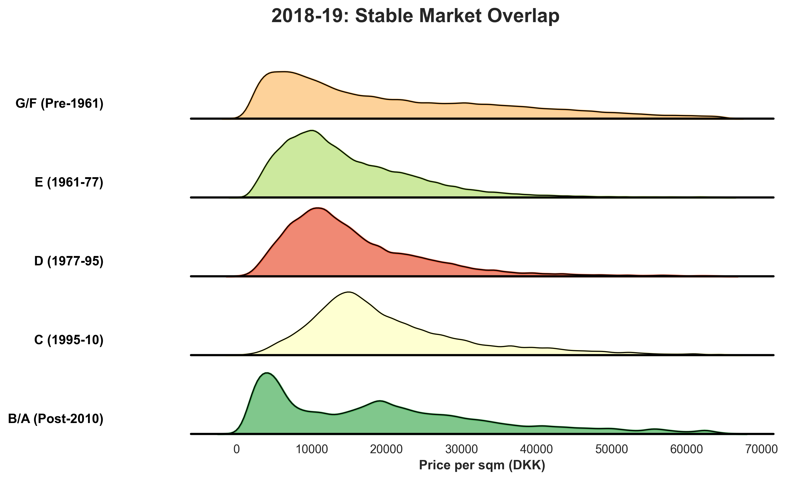
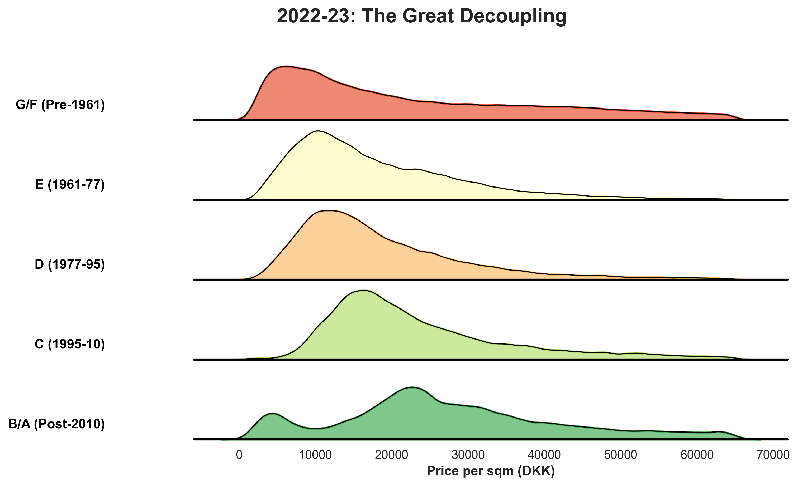
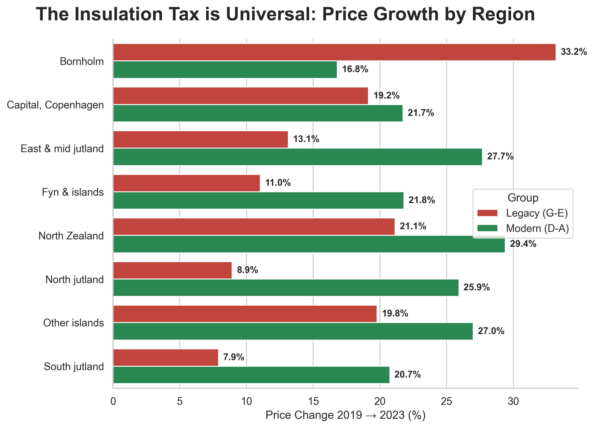

Why Walls now matter more than Zip Codes in the Danish housing market.
For thirty years, the rules of Danish real estate were simple: Location, Location, Location. But in the winter of 2022, a new variable seized control. As energy prices skyrocketed, the "Energimærke" (Energy Label) stopped being a technical formality and became a financial weapon. Overnight, a drafty window transformed from a "charm" into a permanent equity penalty.
Our analysis of 1.5 million sales reveals a structural shift that we call The Insulation Tax: a reality where the building's age and technical performance now dictate its price resilience more than its municipality.


Figure 1: Ridgeline distributions of price per sqm. In the stable 2018-19 market (top), all building eras shared a similar price floor. By 2023 (bottom), the market decoupled: Legacy housing (G-E) saw its value distribution flatten and shift left, while modern builds (B-A) remained resilient. This is the visual proof of a two-tier market.
One might assume this penalty is localized to rural areas. The data says otherwise. Whether in the heart of Copenhagen or the coast of Jutland, the gap between "Legacy" and "Modern" builds has widened. The Insulation Tax is a universal phenomenon, hitting every administrative region in Denmark.

Figure 2: Small Multiples of Price Growth (2019 vs 2023). In every single region, Modern homes (green) outperformed Legacy homes (red). In areas like North Jutland and South Zealand, the growth gap exceeds 10%, proving that location cannot save a poorly insulated asset.
"In the new Danish market, your energy label is your new location."
How much exactly is a year of age worth? The final tool below allows you to explore the current market reality house-by-house. By mapping building year against sale price, the "Insulation Tax" becomes visible as a physical slope. Notice the size of the bubbles—this represents the "Haggling %"—the discount buyers successfully demanded to take on the risk of an old home.
Figure 3: Interactive Market Reality (2023 Sales). Trace the relationship between building year and value. How to read: Each dot is a real sale. Notice the Red Cluster (Pre-1961) vs the Green Cluster (Post-1995). Larger dots indicate higher negotiation pressure—see how buyers are voting with their wallets for efficiency.
The energy crisis of 2022 didn't just change our utility bills; it re-indexed the value of the Danish home. As we move toward a carbon-neutral future, the "Insulation Tax" is likely permanent. The home of the future is no longer just a place to live—it is a technical asset, and its value is now found as much in the thickness of its walls as the view from its windows.